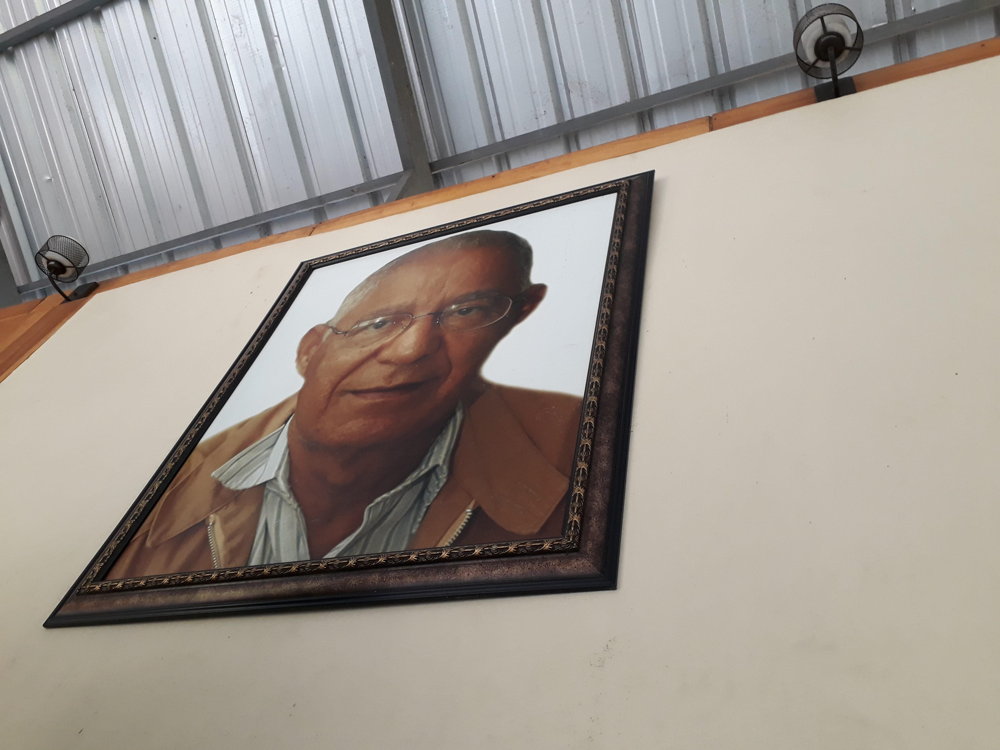

Nuestra Historia
El Instituto Politécnico Industrial de Santiago, IPISA, fue creado, por la necesidad que tenía el empresariado de la Región Norte, de adquirir técnicos calificados y cualificados. Así, Monseñor Roque Adames, el entonces Obispo de la Diócesis de Santiago, haciéndose eco de estas necesidades, sugirió a la Secretaría de Estado de Educación Bellas Artes y Cultos, SEEBAC, actual Ministerio de Educación de la República Dominicana, MINERD, establecer un politécnico en la Ciudad Corazón (Santiago) y recomendó que el mismo fuera dirigido y administrado por la congregación salesiana, por la filosofía de su educación de formar “buenos cristianos y honrados ciudadanos” y por su vasta experiencia en la educación técnica.
En el 1987 se firma el contrato para la creación del Instituto Politécnico Industrial de Santiago, entre la Secretaría de Educación en la persona del Lic. Pedro C. Pichardo, Secretario, y la Sociedad Salesiana, representada por el P. Ángel R. Soto, Inspector de las Antillas, lo cual fue acogido con mucho entusiasmo por el empresariado y por toda la Región del Cibao.
Los sacerdotes Juan Artale y Joaquín Soler, ya fallecidos, junto con el Coadjutor Eligio Batista, constituyeron la primera comunidad salesiana en Santiago. En la actualidad, está integrada por los también sacerdotes, Jesús Baltazar Santana, Eddy Peña, el Coadjutor Melvin Cuello y los seminaristas mayores Silverio Sánchez y Deyvi Hernández Upia.
Con un total de 131 estudiantes, inició sus actividades el 11 de enero de 1988 con la semana de ambientación , dentro de la cual se llevó a cabo la inauguración oficial , el jueves 14, a la que asistió el entonces Presidente de la República, el Dr. Joaquín Balaguer.
El lunes 18 de enero del mismo año, se da formal apertura a las labores académicas y administrativas, correspondientes al segundo semestre del año escolar 1987-1988.
Durante el citado período, el IPISA era una Institución exclusiva para estudiantes del sexo masculino y contaba con 5 talleres: Ebanistería, Electricidad, Electrónica, Mecánica Automotriz y Mecánica Industrial.
A partir del segundo año escolar (1988-1989) se permitió la inscripción de jóvenes del sexo femenino y se abrió el taller de Corte y Confección. En el 2007 se crean dos nuevos talleres, pero del área de servicios: el de Informática y el de Contabilidad y Finanzas, con lo que se ha fortalecido la capacidad institucional, para continuar dando respuesta a la demanda regional y nacional de técnicos con valores cristianos y humanos.
Esta Institución, además de formar técnicos medios se dedica también desde el 2004, a la formación de técnicos básicos, a través de la Unidad de Educación Continuada, UEC, desde donde complementa la labor social que viene desarrollando desde sus inicios en pos de los jóvenes más necesitados, así como la consolidación de sus relaciones con el mundo empresarial.
A través del tiempo, el IPISA se ha proyectado como un centro educativo con alto grado de confiabilidad, compromiso y calidad, ofreciendo una educación integral, basada en la religión, la razón y el amor, pilares del Sistema Preventivo de San Juan Bosco.